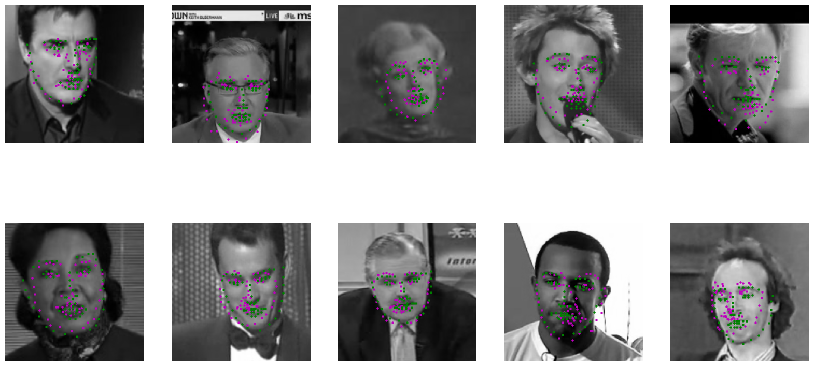

Junhua (Michael) Ma
CNN for keypoint regression on 224×224 grayscale images. It uses three convolutional blocks with batch normalization, Leaky ReLU, pooling, and dropout, followed by three fully connected layers. The final output is a 136-dimensional vector representing 68 keypoints. Xavier initialization is applied to the fully connected layers for stable training.
The model is trained for 10 epochs with MSE loss and Adam optimizer.
Training loss curve for different learning rates:
Training loss curve for different loss function:
Overall, the training suggests that learning rate of 0.0001 with loss function SmoothL1 leads to minimum training loss.
Sampled results from test set are shown below, with ground truth keypoints (green) and predicted keypoints (magenta). While the predicted keypoints roughly align with ground truth, they are quite inaccurate.
This model adapts a pretrained ResNet-18 for keypoint regression by replacing the final classification layer with a fully connected layer outputting 136 values (68 keypoints).
The training uses the following strategy for 10 epochs with MSE loss and Adam optimizer:
Training loss curve for different learning rates:
Training loss curve comparing part 1 direct regression and part 2 transfer learning:
From the loss curves of transfer learning, we see the loss decrease after transitioning to fine-tune the entire model mid-training. Similar to part 1, the SmoothL1 loss function performs better. Transfer learning overall outperforms direct coordinate regression.
Sampled results from test set are shown below, with ground truth keypoints (green) and predicted keypoints (magenta). Compared to part 1, the predicted keypoints appear more accurate. There is room for improvement by training longer, tuning hyperparameters, or using pretrained models like DINO or MAE.
Simple U-Net adapted for keypoint heatmap prediction from grayscale images. It uses four downsampling ConvBlocks for encoding, mirrored by three upsampling UpConv layers with skip connections and corresponding ConvBlocks for decoding. The final 1×1 convolution outputs 68 heatmaps, one per keypoint.
I tested both MSE and BCE loss. MSE resulted in cleaner combined heatmaps but failed to learn sharp peaks. BCE better localized individual peaks, so it was selected. The model is trained for 20 epochs.
Training loss curve:
Sampled results from test set shown below. Each row (left to right): true keypoints, true heatmap, resized true heatmap, predicted heatmap, predicted keypoints. The predicted keypoints are more accurate than in part 1 and 2.